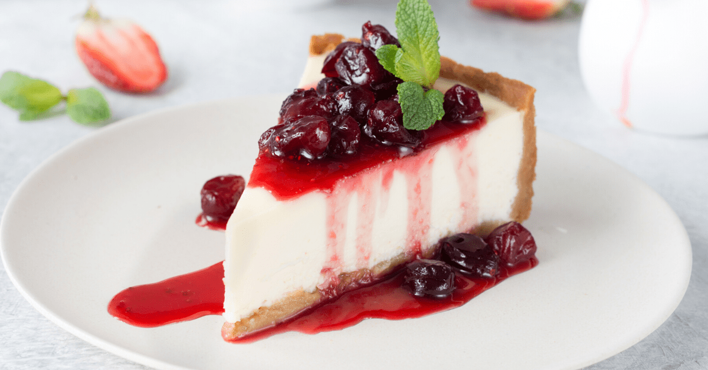

Philadelphia Classic Cheesecake

Description
Whether enjoyed at a family gathering, a special occasion, or simply as a delightful indulgence, the Philadelphia Classic Cheesecake is a timeless dessert that never fails to leave a lasting impression on those lucky enough to savor its creamy, melt-in-your-mouth goodness.
Ingredients
- 1 ½ cups HONEY MAID Graham Cracker Crumbs
- ⅓ cup butter or margarine, melted
- 3 tablespoons sugar
- 4 (8 ounce) packages PHILADELPHIA Cream Cheese, softened
- 1 cup sugar
- 1 teaspoon vanilla
- 4 eggs
Steps
- Preheat the oven to 325 degrees F (165 degrees C).
- Mix crumbs, butter, and 3 tablespoons sugar until combined. Press firmly onto the bottom of a 9-inch springform pan.
- Beat cream cheese, 1 cup sugar, and vanilla in a mixing bowl until smooth. Add eggs, one at a time, mixing on low speed until just blended. Pour over crust.
- Bake in the preheated oven until center is almost set, about 55 minutes. Loosen cake from the pan rim. Cool before removing rim.
- Refrigerate for 4 hours before serving.